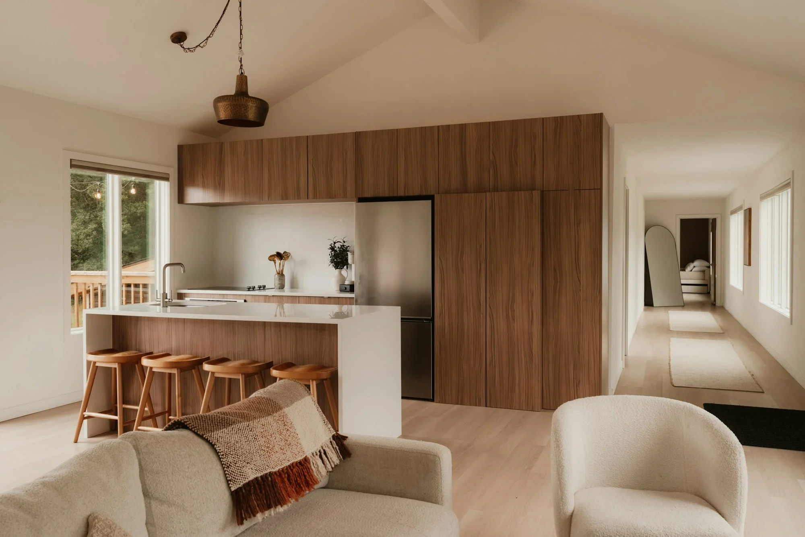
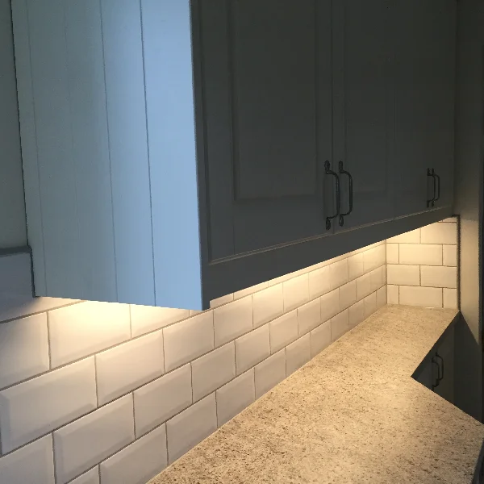

Ditt hem.
Vårt hantverk.
Badrum, kök och renoveringar med en kontakt från första idé till färdigt resultat.
Genomtänkt från
första idé till
sista detalj.
Ett hem ska hålla för livet som pågår i det. Vi på Kullabygg tar hand om både helheten och detaljerna, med yrkesstolthet och en nära dialog genom hela projektet.
Lär känna Kullabygg
Från tanke till
något att trivas i.
Dina planer.
Vår kunskap.
Små förändringar eller ett större projekt. Vi hjälper dig att hitta rätt lösning för just ditt hem.
Från de första idéerna till materialval och färdiga ytor. Vi hjälper dig att skapa ett badrum utifrån ditt hem, dina behov och din budget.
Läs om badrumFörnya det kök du redan har eller skapa något helt nytt. Vi hjälper dig med detaljerna, helheten och vägen däremellan.
Läs om kökNär livet förändras kan hemmet följa med. Vi hjälper dig med tillbyggnader och renoveringar som tar vara på husets möjligheter.
Läs om tillbyggnad & renovering


En kontakt.
Hela vägen.
Att bygga om ska kännas genomtänkt. Med en totalentreprenad samlar vi projektet och håller ihop arbetet.
Vi lyssnar
Vi pratar om hemmet, dina önskemål och vad du vill förändra.
Vi planerar
Tillsammans går vi igenom lösningar, material och projektets omfattning.
Vi bygger
Vi håller ihop arbetet och har en löpande dialog under projektet.
Vi går igenom
Vi följer upp resultatet och går igenom arbetet tillsammans med dig.

Bra byggen
börjar med
en bra dialog.
Vi tror på att lyssna, tänka tillsammans och hålla vad vi kommer överens om. För oss är god kommunikation, trygghet och kunskap grunden till ett bra samarbete.
Du får ett engagerat bollplank och en entreprenör som kan hålla ihop ditt projekt, från skisser och materialval till färdigt arbete.
Mer om hur vi arbetarLite enklare
att komma igång.
Kan ni ta hand om hela renoveringen?
Ja, Kullabygg erbjuder totalentreprenad. Det innebär att vi kan hålla ihop projektet från idéer, skisser och planering till själva byggandet. Vi går igenom omfattningen tillsammans innan arbetet börjar.
Hjälper ni till även om jag bara har en idé?
Absolut. Vi är gärna med tidigt och hjälper till att utveckla dina tankar till genomtänkta lösningar för ditt hem.
Kan ni förnya delar av ett kök?
Ja. Vi kan hjälpa till med specifika delar av ett befintligt kök eller stå för en komplett köksrenovering.
Hur får jag en offert?
Ring Marcus på 070-359 53 60 eller mejla info@kullabygg.se. Beskriv gärna vad du vill göra och var projektet finns, så pratar vi vidare om förutsättningarna.
Vad vill du göra
med ditt hem?
Berätta om dina tankar. Vi hjälper dig att se möjligheterna och hitta en väg framåt.